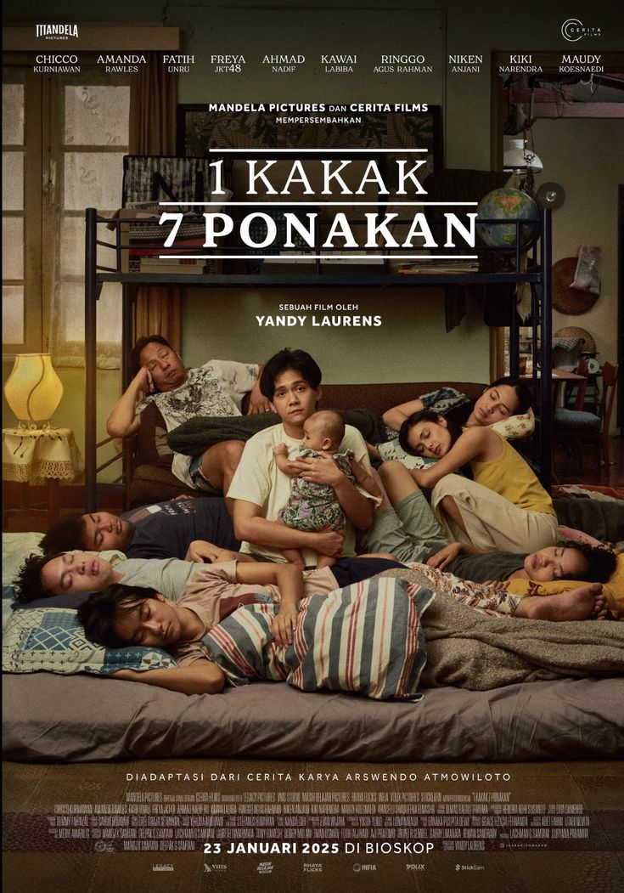

1 Kakak 7 Keponakan
-
Deskripsi Singkat: Film komedi keluarga tentang seorang kakak yang tiba-tiba harus mengurus tujuh keponakannya setelah orang tua mereka berhalangan hadir.
-
Aktor Pemeran Utama: Lutesha, Chicco Kurniawan, Rio Dewanto, Putri Ayudya,
-
Pengarang Cerita: Angga Dwimas Sasongko & Maya Sari
Sutradara: Angga Dwimas Sasongko
-
Rating:
-
Sinopsis: Lia, seorang wanita karier yang mandiri dan sibuk, tiba-tiba mendapat kabar bahwa ia harus mengurus tujuh keponakannya selama liburan panjang karena orang tua mereka berhalangan hadir. Dari yang paling nakal hingga yang paling penurut, Lia harus belajar menyeimbangkan hidupnya antara pekerjaan, disiplin anak-anak, dan kekacauan yang terjadi setiap hari.
Dalam kekacauan itu, Lia justru menemukan cara untuk lebih dekat dengan keluarga, menghadapi masalah dengan sabar, dan menyadari bahwa tanggung jawab keluarga bisa menjadi pengalaman penuh tawa, kejutan, dan kasih sayang.